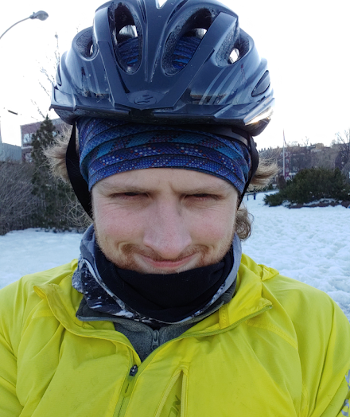

[SJS]
Welcome to the tracking website for my St.John's Streets Project
Home
Latest Rides Map
Photos
About
Welcome to the tracking website for the St. John's Streets Project. In November 2019 after seeing a post by Reddit user /u/davisvilums I was inspired to attempt a similar project in my home town
This is me
